Quizás recuerdes que el curso pasado trabajamos con los vectores; en particular con los de dos elementos \(\vec{u}=(3,4)\) . Si te fijas podemos considerar que ese vector (3 4) es un caso particular de matriz en la que sólo hay una fila. En este apartado vamos a ver distintos tipos de matrices que por alguna característica particular reciben un nombre específico.
En la siguiente presentación puedes ver las definiciones, ilustradas con ejemplos, de diversos tipos de matrices. Si pulsas en la flecha de avance de la parte inferior izquierda podrás ver los tipos que hay.
Texto
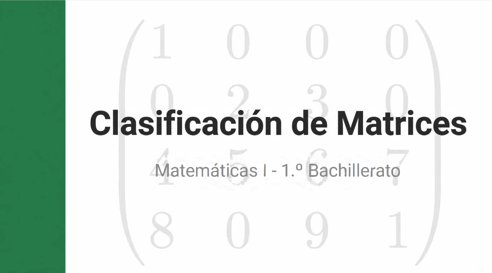
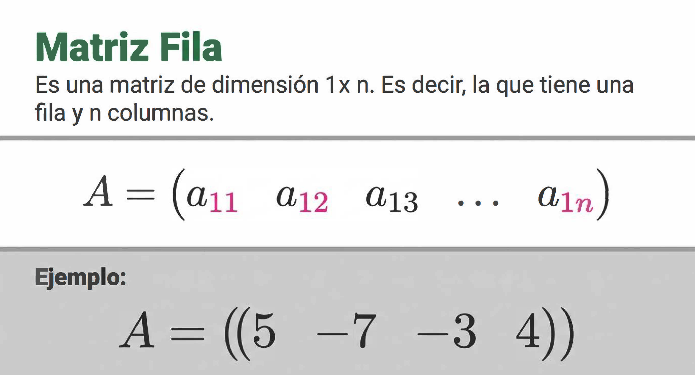
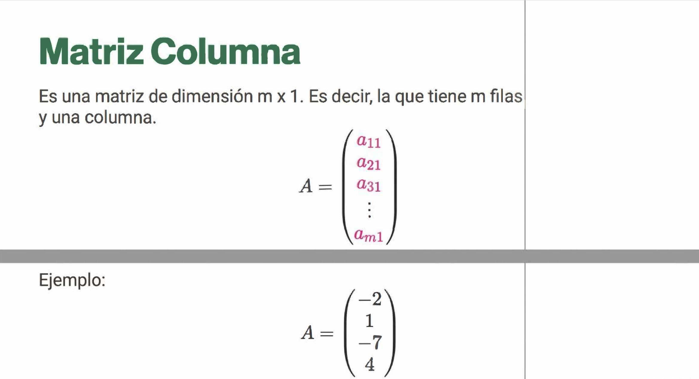
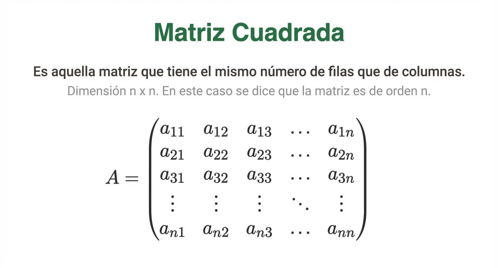
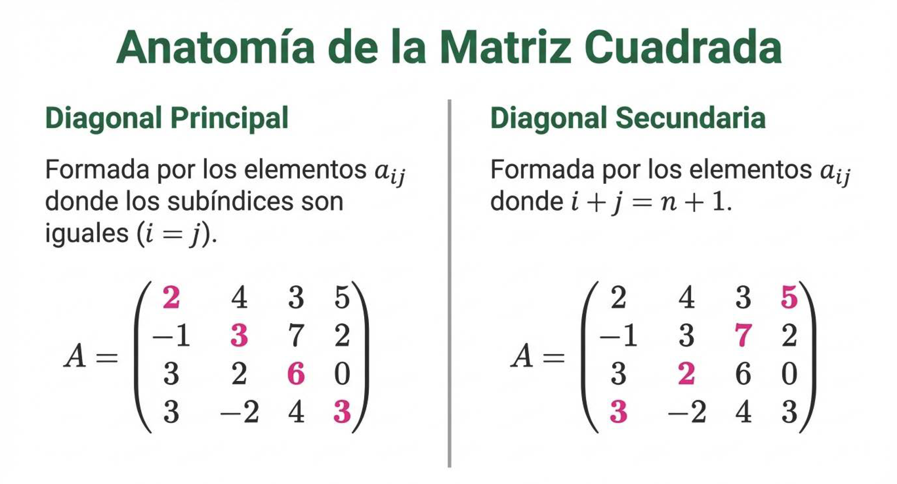
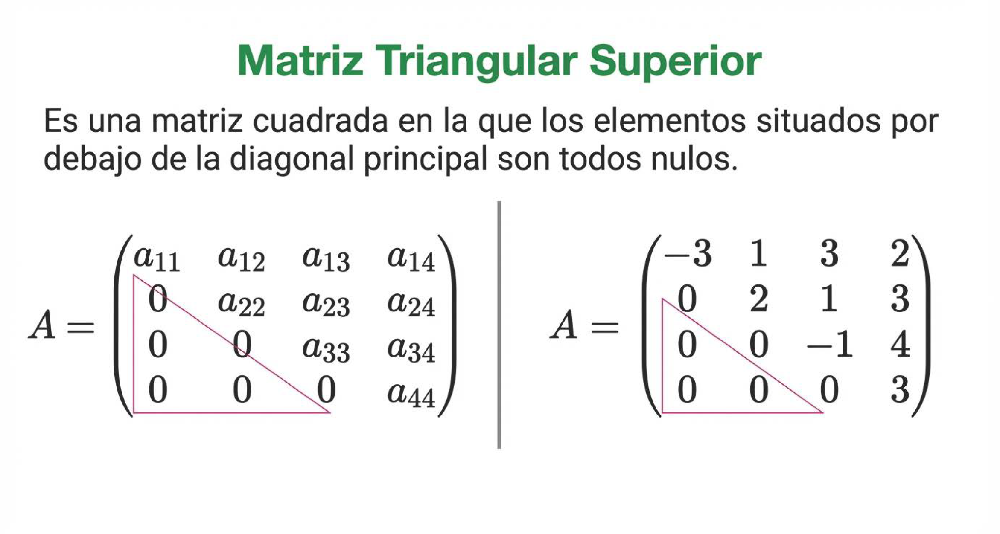
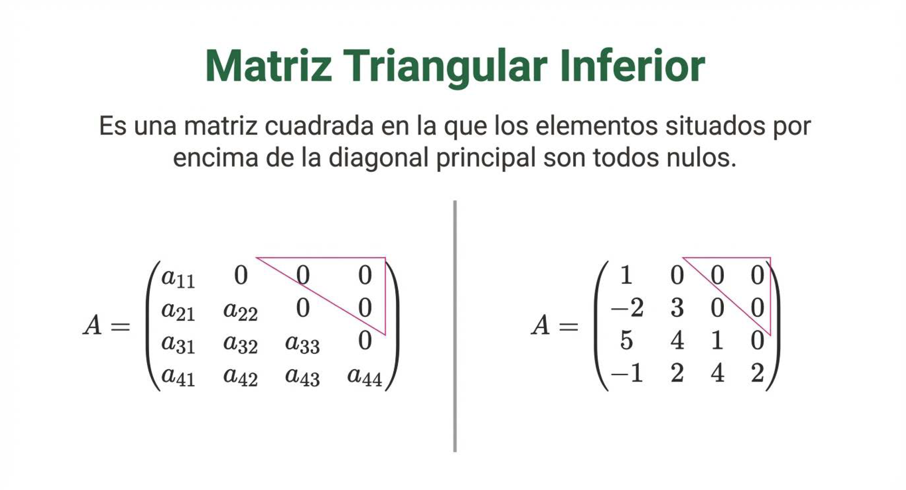
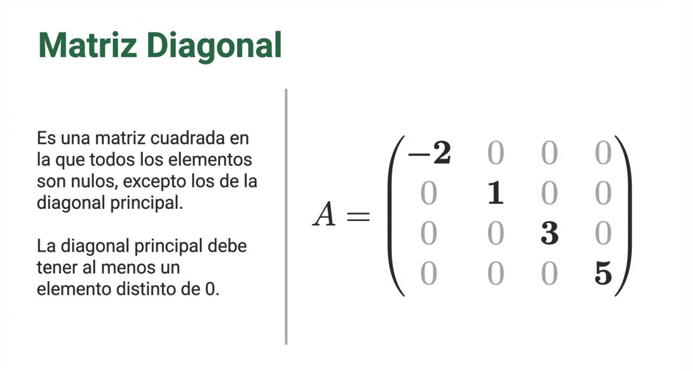
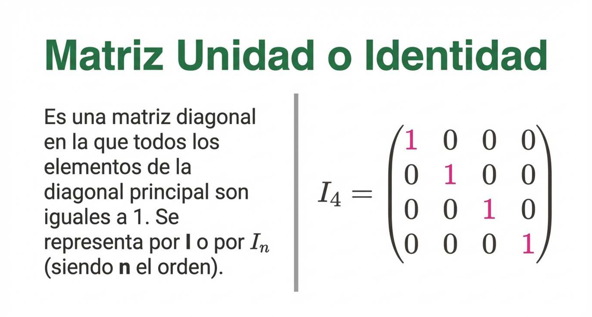
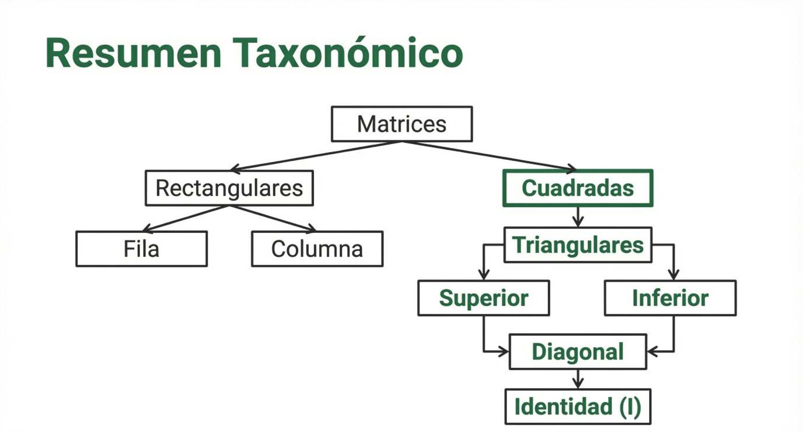
Verdadero o Falso
En muchos mapas de carreteras aparece la información sobre las distancias entre las capitales de provincias o de países. A partir de esa información podemos construir una matriz de distancias como la siguiente, en la que, para no repetir datos, sólo se escribe la distancia de una ciudad a otra, no de la otra a la una, nos explicamos, si escribimos la distancia de Barcelona a Madrid, no se escribe también la de Madrid a Barcelona, sino que se escribe 0.
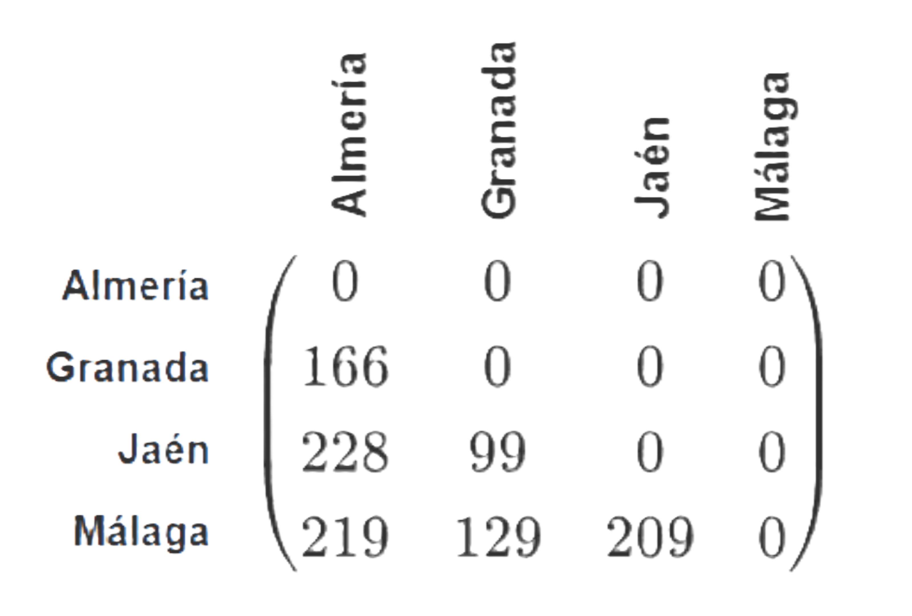
Aquí tienes la matriz de distancias que hemos construido con los kilómetros que hay entre las capitales de Andalucía Oriental. A partir de ellas responde si son ciertas o falsas las siguientes afirmaciones:
00:00:
Matriz transpuesta
|
La matriz transpuesta (denotada generalmente como \(A^T\) o \(A^t\) ) es el resultado de intercambiar ordenadamente las filas por las columnas de una matriz original. Está dada por: \[(A^t)_{ij} = A_{ji}, \quad 1 \leq i \leq n, \quad 1 \leq j \leq m\] En donde el elemento \(a_{ji}\) de la matriz original \(A\) se convertirá en el elemento \(a_{ij}\) de la matriz traspuesta \(A^t\). |
Si la matriz original tiene dimensiones \(m \times n\), la transpuesta tendrá dimensiones \(n \times m\).
Por ejemplo, la primera fila de \(A\) se convierte en la primera columna de \(A^T\). La fila \( i \) de la matriz original se convierte en la columna \( i \) de la transpuesta.
Dada la matriz \( A \):
\[ A = \begin{pmatrix} 1 & 2 \\ 3 & 4 \\ 5 & 6 \end{pmatrix} \]
Su transpuesta \( A^T \) es:
\[ A^T = \begin{pmatrix} 1 & 3 & 5 \\ 2 & 4 & 6 \end{pmatrix} \]
|
Propiedades Fundamentales Sean \( A \) y \( B \) matrices y \( k \) un escalar:
|
|
Tipos de matrices según su transpuesta
|
Ejercicio resuelto
Escribe la matriz traspuesta de la que aparece en el ejercicio anterior.
Hallar la traspuesta consiste en cambiar filas por columnas, por lo que obtendríamos:
Ejercicio resuelto
Escribe una matriz simétrica sabiendo que su primera fila está formada por los números 1, 2 y 6, su segunda columna tiene los elementos 2, 3, -5 y el término \( a_{33} \) es 8.
El objetivo es construir una matriz \( A \) de orden 3 que cumpla la condición de simetría: \( A = A^t \) (es decir, \( a_{ij} = a_{ji} \)).
1. Colocación de los datos iniciales
Empezamos colocando la información directa que nos da el enunciado en nuestra matriz genérica:
- Primera fila: \( a_{11} = 1 \), \( a_{12} = 2 \), \( a_{13} = 6 \)
- Segunda columna: \( a_{12} = 2 \) (vemos que coincide), \( a_{22} = 3 \), \( a_{32} = -5 \)
- Término \( a_{33} \): \( a_{33} = 8 \)
Con estos datos, la matriz tiene esta estructura preliminar:
\( A = \left( \begin{array}{rrr} 1 & 2 & 6 \\ \dots & 3 & \dots \\ \dots & -5 & 8 \end{array} \right) \)
2. Aplicación de la simetría
Utilizamos la propiedad fundamental de las matrices simétricas (\( a_{ij} = a_{ji} \)) para rellenar los huecos restantes:
- 🔹 El elemento \( a_{21} \) debe ser igual a \( a_{12} \), por tanto \( a_{21} = 2 \).
- 🔹 El elemento \( a_{31} \) debe ser igual a \( a_{13} \), por tanto \( a_{31} = 6 \).
- 🔹 El elemento \( a_{23} \) debe ser igual a \( a_{32} \), por tanto \( a_{23} = -5 \).
3. Matriz final
Sustituyendo todos los valores, obtenemos el resultado perfectamente alineado:
\( A = \left( \begin{array}{rrr} 1 & 2 & 6 \\ 2 & 3 & -5 \\ 6 & -5 & 8 \end{array} \right) \)